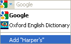
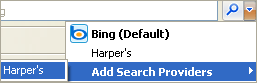

You are about to install the Classical Scores Library in your Google search bar located in the top right corner of your Internet Explorer or Firefox browser.
Off Campus Access: If you use the resource from off campus, you will be prompted for your Crossett User Name and ID before being redirected to your search results.
Installation for Firefox
| Click on the drop down that enables you to select search engines, and select the option "Add Classical Scores Library". You are now ready to search the resource from your browser! |  |
Installation for Internet Explorer
| Click on the drop down that enables you to select search engines, and select the bold option "Add Search providers". A window will pop up asking you if you are sure you want to add this search engine- Click "Add". You are now ready to search this resource directly from your browser!
Get some more plugins Get some more widgets |
 |